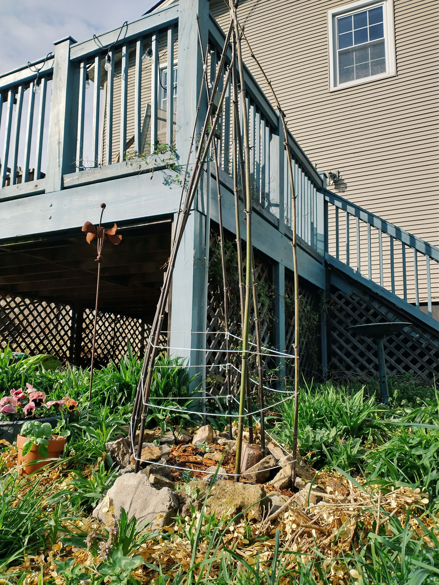
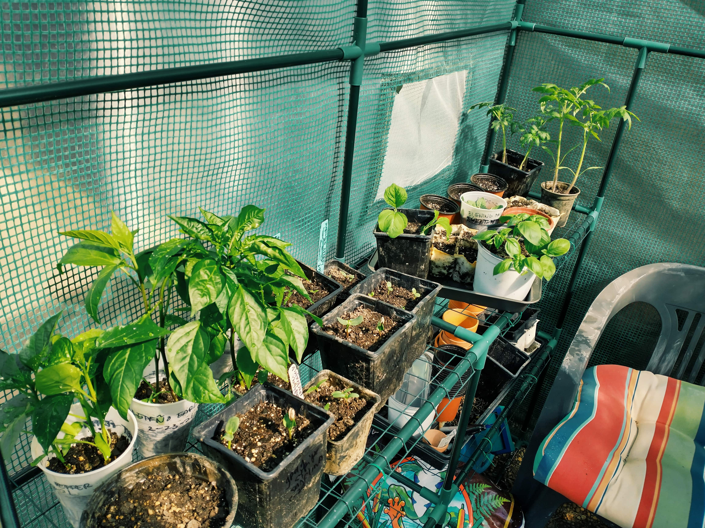
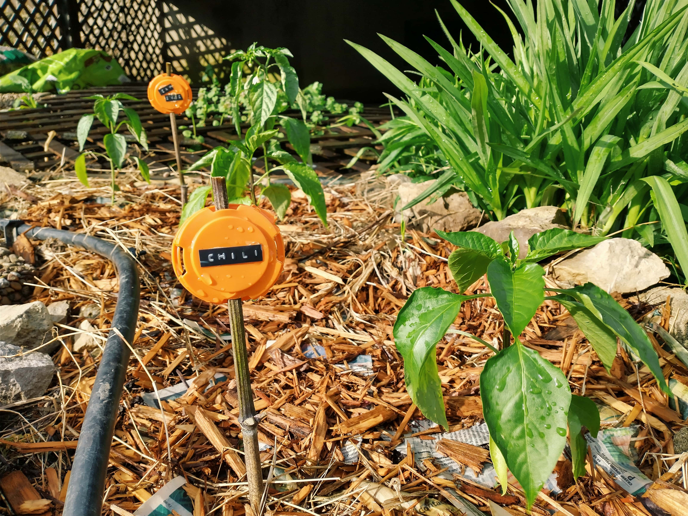
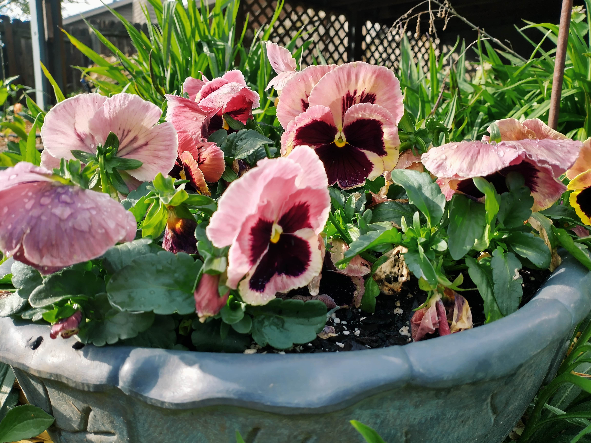
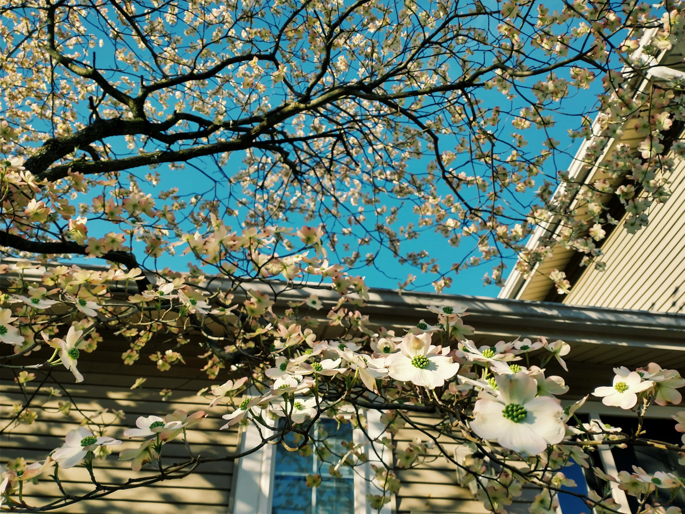
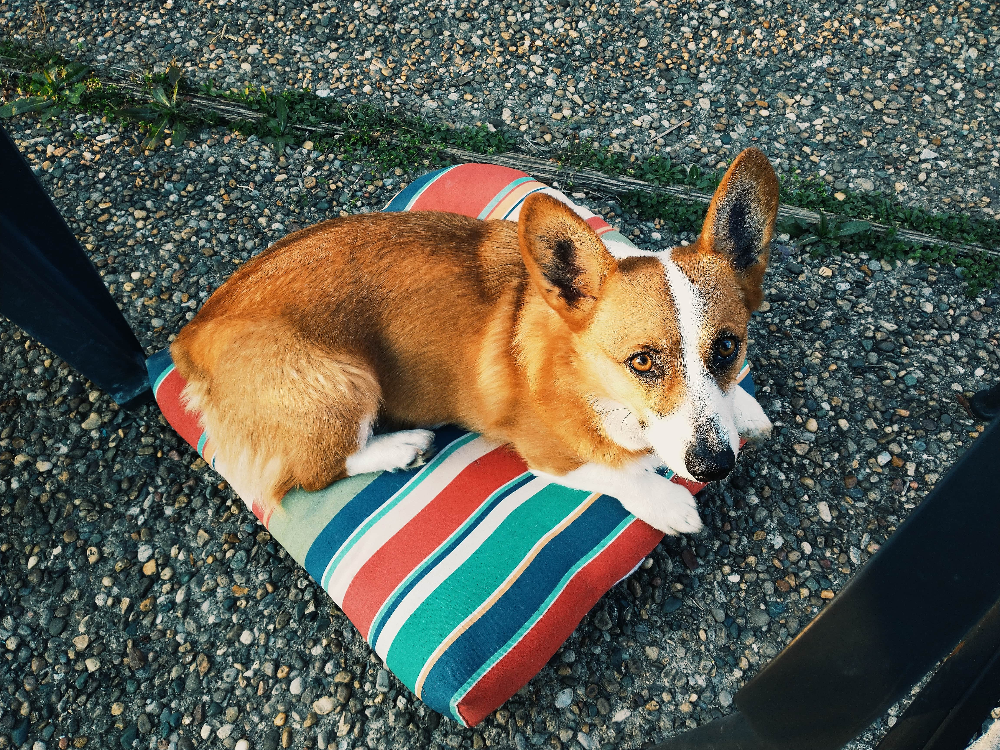

The Dogwood is blooming so I've had "Wagon Wheel" stuck in my head all week
April 12, 2021
My friend Josh bought a house back in December that belonged to a couple of ambitious gardeners, and so he’s gifted me with a lot of bamboo and more containers that I could have ever hoped for, which means I don’t have to scour second-hand shops for them anymore, thank God.
Of course, I immediately rebuilt my pea-growing structure using the aforementioned bamboo. I also built another, smaller structure to grow sweet peas on.
We had several warm days in a row this week, so I went ahead and planted out all my starts that were getting too big for their seedling containers—namely eggplants, two types of tomatoes, and four types of peppers. I hope I don’t regret it—I’ve definitely been lulled into false warm weather complacency before.
I DIYed a bunch of garden markers by Gorilla glueing labels onto those little plastic 6-pack tops.
I also got a palette of pansies in gorgeous colors from a local nursery that I’ve interplanted throughout the garden.
And finally, our Dogwood out front is blooming! The true sign of the times.
That's all for now. If all goes according to plan, my next update will be very squash-centric. 🤞